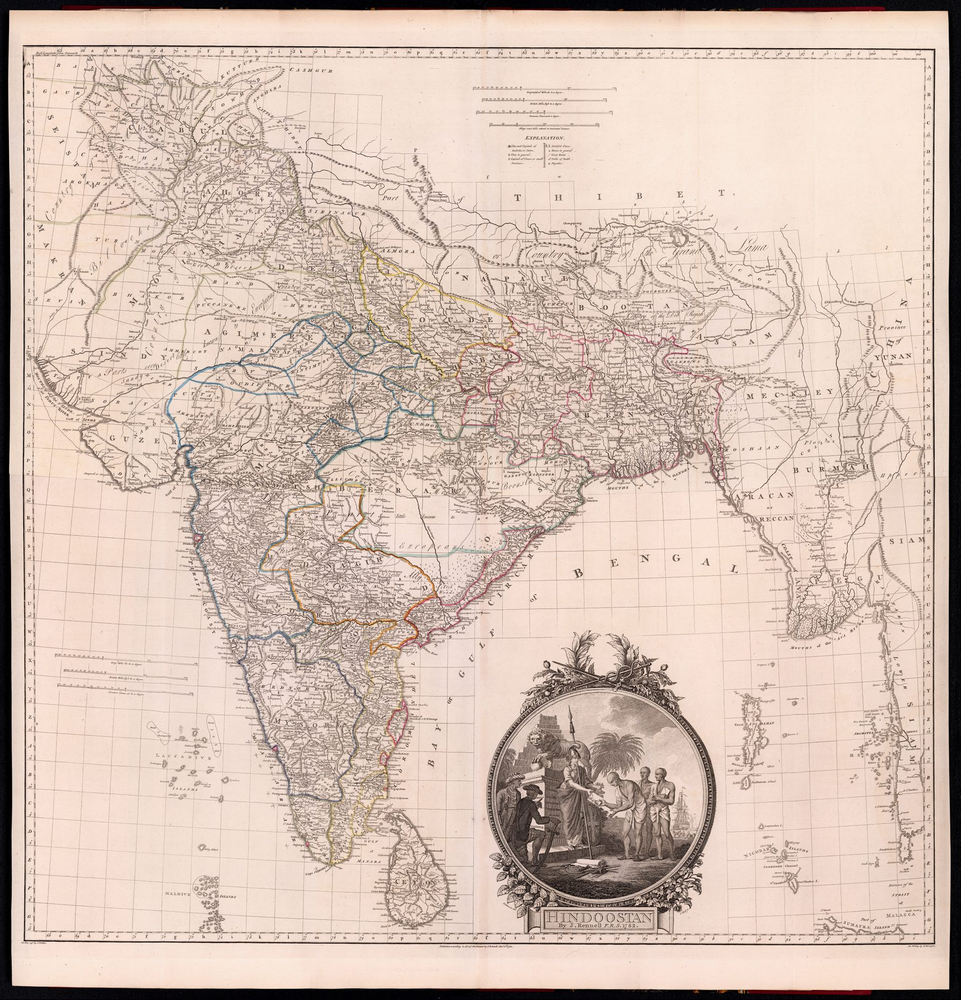

A general map built from unequal knowledge
Rennell served as Surveyor-General of Bengal from 1767 to 1777, directing extensive route and district surveys in the territories then controlled by the East India Company. This general map carried that measured knowledge beyond Bengal by combining it with itineraries, astronomical positions, earlier maps and information supplied by travellers and Indian informants. Its authority comes from joining new field measurement to the best intelligence available elsewhere.
The object and its issues
The plate is dated 1782 and was engraved on two sheets. This impression was issued with Rennell’s 1783 Memoir of a Map of Hindoostan; map, memoir and later editions developed together as Rennell revised his account of the subcontinent.
Survey, administration and display
Roads, rivers, political divisions and measured positions turn a varied landscape into a connected territorial field. The cartouche makes the political setting explicit: Britannia receives the products and knowledge of India. Measurement appears as enlightened scholarship, but it also makes routes, jurisdictions and resources available to a government whose territorial power was expanding.
The cartouche
The title cartouche is a political statement in miniature. Britannia, her spear resting on a bolt of cotton cloth and a Company ship behind her, receives from kneeling pundits a book labelled ‘Shaster’, the Hindu law, while sepoys look on. Rennell glossed the scene in the Memoir as the ‘humane interposition of the British legislature in favor of the natives of Bengal’ – the recognition of Hindu and Muslim law in the Company’s courts that Hastings’s reforms and Parliament had lately secured, offered as the reason a map of Hindoostan should be drawn by an Englishman. Zoom to the lower left of the plate: the allegory sits on paper that, twenty years earlier, d’Anville had left empty.
The gaze
Britannia in the cartouche receives India’s knowledge, and the map shows the mechanism. Ten years of Bengal surveying supply the measured core; around it, itineraries and informants fill the rest, and the general map presents both as one field. Whoever walked the roads or reported the distances is absorbed into a single English name.
In the Deccan timeline
Holkar, Scindia, Gaekwad, Bhonsle (1728–1761) · Panipat, 1761 (14 January 1761) · Madhavrao I (1761–1772) · The first Anglo-Mysore war (1767–1769) · Wadgaon and Salbai (1779–1782) · Pollilur, 1780 (10 September 1780) · Tipu Sultan and the Treaty of Mangalore (1782–1784) · Lambton and the Great Trigonometrical Survey (10 April 1802)